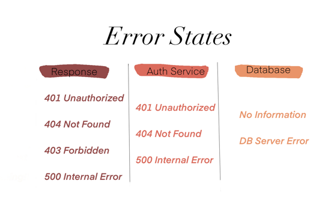
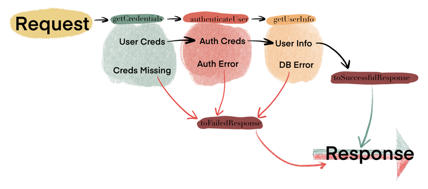

ADTs in Practice
In previous post we defined ADTs as
Algebraic Data Types (or ADTs) model the flow of a program (or a system) in terms of data & functions that describe the complete behaviour and states the data can go through.
In this post, we will work through defining ADTs for an API service.

API service will return User's Information by:
- Extracting user id & password from the request
- Checks them against an authorization service
- Retrieves User's Information from database
- Returns User Information in response
In order to write the ADTs we first need to understand the flow of our system.
The following server diagram and ADTs(possible states) give us a good idea of how we want to design our system.

which is described by
Server
import cats.effect.IO
class Server(http: Http, database: Database) {
def process(request: Request): IO[Response] = {
val respF =
for {
creds <- request.getCredentials()
authorizedCreds <- authenticateUser(creds)
userInfo <- getUserInfo(authorizedCreds)
successfulResponse <- toSuccessfulResponse(userInfo)
} yield successfulResponse
respF.handleErrorWith(toFailedResponse)
}
def authenticateUser(creds: UserCredentials): IO[AuthCredentials] = ???
def getUserInfo(authCreds: AuthCredentials): IO[UserInfo] = ???
def toFailedResponse(err: Throwable): IO[Response] = ???
def toSuccessfulResponse(userInfo: UserInfo): IO[UserInfoResponse] = ???
}
We have external dependencies which can be further encoded in terms of following traits & case classes
Traits
trait Request {
def getCredentials(): IO[UserCredentials]
}
trait Http {
def post(userCreds: UserCredentials): IO[AuthCredentials]
}
trait Database{
def queryUser(userName: String): IO[UserInfo]
}
Credentials
final case class UserCredentials(userId: String, password: String)
final case class AuthCredentials(userId: String, userName: String)
final case class UserInfo()
Successful Response
final case class UserInfoResponse(userInfo: UserInfo) extends Response
ADTs & Flow
Previously we defined our system in terms of happy path. But in reality there are many ways in which the server can end up in an error state.
For example, we know that the authentication server & our own server can respond with one of the typical HTTP statuses for error (we will use a simpler set for this example). We will similarly assume smaller set of states for the database.
We can define these using following top high level traits.
Top level Error Traits
sealed trait CredentialErrorResponse
sealed trait AuthResponse
sealed trait AuthErrorResponse extends AuthResponse
sealed trait DBResponse
sealed trait DBErrorResponse extends DBResponse
Following are examples of possible errors we will handle per domain.

Defining Error ADTs
Based on the above traits and error ADT breakdown, we can define the case classes to represent them as follows.
final case class CredentialsMissing(msg: String) extends RuntimeException(msg) with CredentialErrorResponse
final case class UnauthorizedUser(msg: String) extends RuntimeException(msg) with CredentialErrorResponse
final case class NotFound(msg: String) extends RuntimeException(msg) with CredentialErrorResponse
final case class Forbidden(msg: String) extends RuntimeException(msg) with CredentialErrorResponse
final case class InternalServerError(msg: String) extends RuntimeException(msg) with CredentialErrorResponse
AuthResponse types
final case class AuthCredentialsResponse(authCredentials: AuthCredentials) extends AuthResponse
final case class UnauthorizedAuthUser(msg: String) extends RuntimeException(msg: String) with AuthErrorResponse
final case class AuthUserNotFound(msg: String) extends RuntimeException(msg: String) with AuthErrorResponse
final case class AuthServerError(msg: String) extends RuntimeException(msg: String) with AuthErrorResponse
Database types
final case class UserInfoFound() extends DBResponse
final case class UserInfoNotFound() extends DBResponse
final case class DBError(msg: String) extends RuntimeException(msg) with DBErrorResponse
Now if we look at how our system is overall designed we have a very nice diagram based around ADTs & Flow.

Conclusion
Hopefully now you have a better idea on how to take a system and slowly break it down into ADTs without even touching the actual implementation. This allows us to think and reason about our system in a declarative manner.